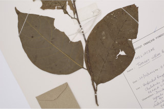
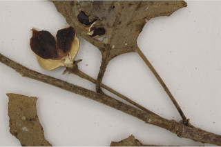
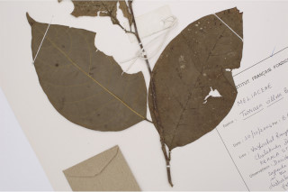
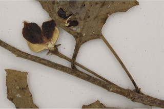

| Habit : | Large shrubs , deciduous . |
| Leaves : | Leaves simple , alternate , spiral ; petiole 0.5-1 cm long, planoconvex in cross section, tomentose ; lamina 5-10 x 3-6 cm, ovate or elliptic , apex acuminate , base acute or obtuse , margin entire , membranous , glabrescent above and villous beneath; midrib raised above; secondary_nerves 6-8 pairs; tertiary_nerves broadly reticulate . |
| Inflorescence / Flower : | Flowers axillary , solitary or in fascicles of 2-6, white to yellow, ca. 4 cm long, fragrant; peduncles to 2.5 cm long. |
| Fruit and Seed : | Capsule , subglobose , 4 celled , 1-1.5 cm across; seeds 1-2 per cell. . |
 


